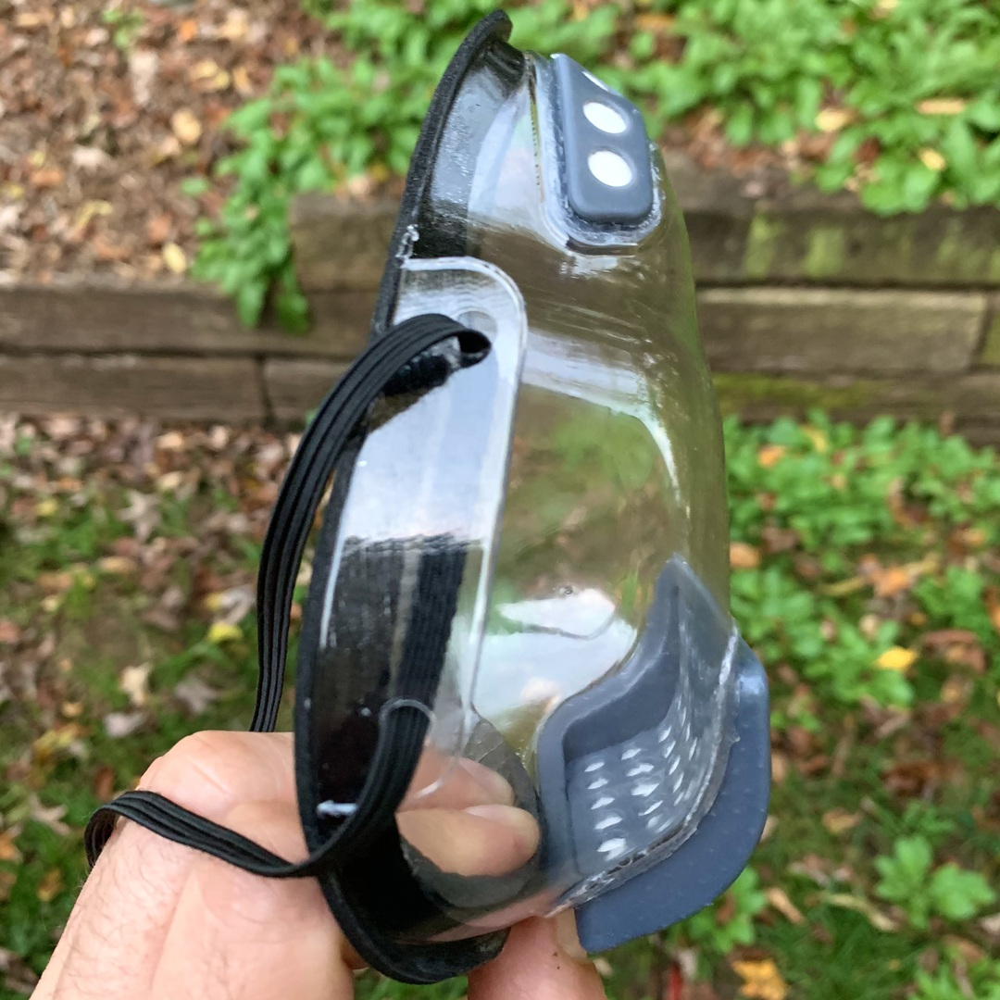
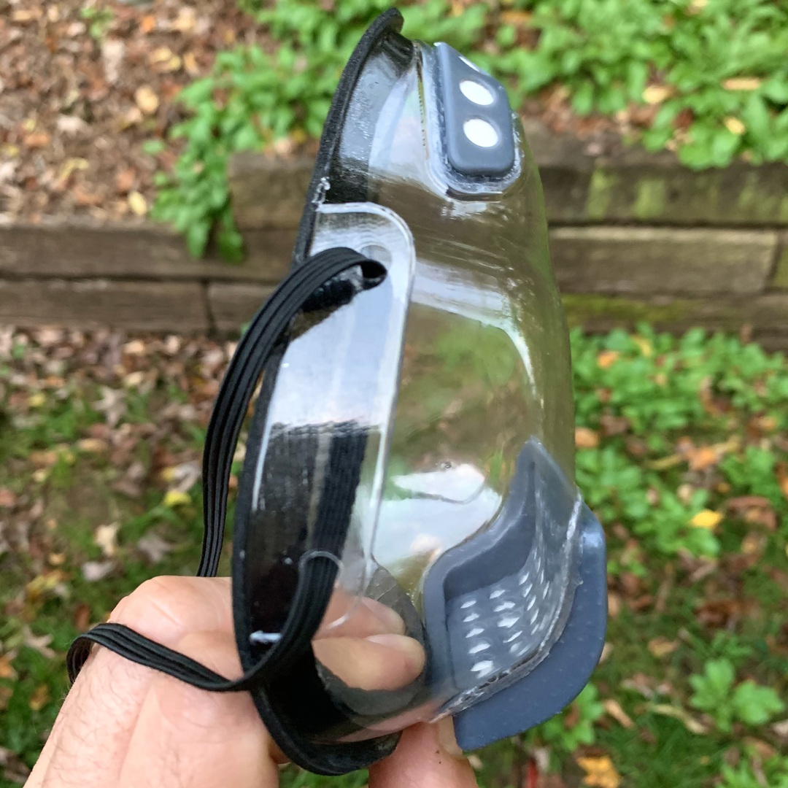

Transparent Reusable Face Mask
Build Instructions
Introduction
During the 2020 COVID-19 pandemic, I have made and donated over 1000 opaque 3D printed masks that have been fit-tested and and particle tested with great results. Using the same basic shape and fundamental design, I spent four months designing a transparent mask that fits better, has more airflow and better filtration.
 

Feature Overview
- works with FaceID, might require setup of alternate appearance
- excellent smile and lip-reading visibility
- great airflow through natural vertical convection (top and bottom openings)
- replaceable filters that can be cut from any flat filter material (shape templates included)
- can be treated with temporary anti-fog spray
- edge is lined with soft weather-sealing foam to create an excellent seal
- flexible but rigid mask shell allows for comfortable facial muscle movements
NO GUARANTEES: This mask is not approved as N95 replacement and is not guaranteed to help against COVID-19 or any other disease.
These instructions will step you through how to make these transparent masks using the tools and equipment that are at my disposal. I've provided the design files and STL exports for you to be able to adapt these instructions to your own environment.
The latest version of these files is freely available under the CC BY-SA 4.0 License from here:
https://github.com/gbevin/transparent-face-mask
Create the Mask Mold
The shell of the mask is designed to be transparent, light, flexible, scratch and shock resistant. The most viable small production technology to achieve this, turned out to be vacuum forming. This heats a sheet of clear PETG plastic and pulls it over a mold by creating a vacuum. Here, this mold is 3D printed and polished in order to achieve the highest possible clarity.
The heat of vacuum forming requires molds to be heat resistant, which needs to be taken into account when selecting the 3D printing technology and material used. Having FDM and MSLA printers available, FDM with polycarbonate filament was the best choice at my disposal. For these molds, I'm using a Raise3D E2 printer and Polymaker PolyMax PC filament.
The print settings are:
- Nozzle: 0.4mm
- Layer: 0.1mm
- Walls: 3
- Infill: 30% Gyroid
- Extruder temperature: 270°C
- Bed temperature: 100°C

Once the mold is finished printing, it's important to sand and polish it to the finest smoothness possible because vacuum forming will transfer even the smallest imperfection to the plastic that's pulled over the mold.
Finishing the mold is a very labor intensive process as you manually go through a series of sand paper grits. I'm using the following in order: 80, 150, 220, 320, 400, 800, 1000, and 3000. Don't press too hard because there is a risk of separating filament layers and creating unintended holes as they come loose during sanding. You can achieve a very smooth finish by using Brasso as the last step with a microfiber cloth.


3D Print the Mask Inserts
Inserts will be glued into the transparent shell in order to hold the replaceable filters and to prevent any air from entering or leaving the mask without having gone through filter material. These inserts can be printed with MSLA printers with minimal supports and when using a suitable resin, still provide enough strength and rigidity for daily use. I'm using an Epax3D X1K 6" Mono Printer with the Epax3D Hard and Tough Resin to which I've added additional black UV pigment to create a darker shade of gray.
Once you've finished printing the inserts, grates, and filter templates, remove the supports and thoroughly wash the items in 99% isopropyl alcohol. You'll have to keep your washing liquid fairly clean in order to prevent any residue from accumulating on the surfaces.
Make sure to wear appropriate PPE yourself when handling resin, especially heavy duty nitrile gloves.


Let the items dry for at least 30 minutes when you remove them from the washing liquid. Afterwards you should finish the curing of the resin by exposing the items to a strong UV light for a sufficient amount of time. For both the washing and the curing, I use an AnyCubic Wash & Cure machine.
I cure the items in this device for at least 4 minutes, then turn the items over and put them in for another 4 minutes. Since uncured resin is toxic, you should be absolutely certain that all resin is cured.
Finally, I rinse all the items under warm water to get rid of anything that might still feel sticky. Be careful with your water temperature, because when it's too hot, it will deform the resin and your items will not fit the mask's shell anymore.


Vacuum Form and Trim the Mask Shell
With your mold ready, you can create the transparent mask shells by vacuum forming clear PETG sheets.
I'm using a Mayku Formbox, which is relatively inexpensive and can be hooked up to your existing vacuum cleaner. The PETG sheets should be at least 1mm thick. A thickness of 1.5mm works also but the mask will not as easily adapt to different face shapes and mouth movements anymore due to the increased rigidity. Thinner PETG sheets become too brittle due to the large draw distance between the edges and the front of the mask. The Mayku 1mm Clear Sheets work fine, but you can also order cheaper 0.040" Vivak PETG sheets from many plastic suppliers and have them cut into 9 1/4" x 9 1/4" squares, for instance from Curbell Plastics.
Before using your mold for vacuum forming, you should apply a suitable release agent to it. The first time this might leave residue on the PETG plastic, but it will allow your mask shells to come loose without damaging the mold. I've had good results with the APEL Silicone Mold Release Spray.

Place your plastic sheet in the vacuum former and set it to the appropriate temperature and duration for your material. I set the Formbox to a temperature of 6 for 1.6 minutes. You'll notice when your sheet is warm enough when is creates a nice bell-shaped curve in the middle.


Once your plastic is formed to the mold, wait a few seconds to ensure the plastic has regained some of its rigidity, otherwise you might burn yourself and deform the result by manipulating it too soon. You can roughly cut away the edges around the mask shell so that it's easier to manipulate for the next steps.

Next is one of the most tedious steps of the mask build process. Using a variety of tools, you should cut along the outside edge of the mask shell without creating any jagged incisions. This part of the mask will be the closest to your face, so it's recommended for the cuts to be as clean as possible. When you've cleanly cut along the edge, you should cut out the holes in which the mask inserts will be glued. Once more, you should be very precise because any deviation of the shape that's indicated by the mold will not provide enough support for the mask inserts to naturally hold in place. Finally, don't forget to create holes in the side flaps for the straps to go through.
I use a combination of tools and developed a technique that works for me. I recommend you practice and experiment on a few mask shells for a while.
These are are the tools I use:
- LIVINGO Kitchen Forged Shears Heavy Duty Ultra Sharp Multi-function Stainless Steel Scissors
- SINGER 00558 5-1/2-Inch ProSeries Heavy Duty Scissors with Power Notch
- CUTRA Wondercutter S
- AFA Tooling Deburring Tool with Blade, 10 High-Speed Steel BS1010 Rotary Burr Removal Blades
- Scalpel Sterile Blades #10 10pcs Sterile Individually Foil Wrapped, with #3 Scalpel Knife Handle
- KUCAA Metal Silver Hand-held 1/4 inch 6mm Round Heavy Duty Single Circle Hole Punch


Glue the Mask Inserts into the Shell Openings
Using an industrial strength glue with a precision tip, like E6000 Jewelry & Bead, the inserts should be glued into the mask shell openings, sealing the joints between the PETG clear shell and the 3D printed inserts. The goal is to have the inserts provide rigidity to the shell and to ensure that all the air goes through the round holes of the inserts that will be covered with filters.
Start with the bottom insert, the largest one, and slowly and uniformly apply the glue all around the outside slab. By holding the center of the insert between your thumb and index finger, you should be able to cleanly apply the glue without get it on other parts of the insert, nor your fingers.
The next step requires more dexterity and precision, using one hand you'll hold the shell and with the other you'll pivot the insert into the shell from the bottom. Then, in one rotational movement, you'll push it further into the opening until the top snaps in place. Be very careful to not sway during this motion because you'll get glue on areas of the shell that should remain perfectly clear. Should that happen, most glues can be cleaned off with isopropyl alcohol and a microfiber cloth once they've slightly tried but not fully cured.
If you've cut the opening at the right size, this will mechanically hold the insert in place while the glue provides the seal and additional fixation. If you cut the hole too small, it might be impossible to push the insert through and the sides of the shell might curl up, preventing the glue from being uniformly squished. If you cut the hole too large, the insert will not mechanically hold in place and the mask will not be as sturdy as it could be.
Once the insert holds mechanically in place, it will be almost impossible to get it back out without damaging the mask's shell. So if you want to practice before applying glue, be aware that you might have to sacrifice some shells.
Next you'll do the same to the top insert. While holding it between your thumb and index finger, slowly and uniformly apply the glue all around the outside slab.
Attaching the insert is similar to the bottom one. You'll once more hold the shell with one hand, and pivot one of the sides of the top insert into the shell. Again, in one motion you'll push the other side in, snapping the insert in place. I start with the left side and snap in the right. Given the small size of the top insert, it's easy to accidentally push the top edge through the shell opening while focusing on the sides. Just be aware of this while being careful, and it should work out fine.
All the same observations about the bottom opening's size apply to the top opening. If you cut the shell correctly and glued the top insert in place, the mask will become more rigid and the glue will provide a seal and additional fixation.
Once both inserts are glued, you should let the glue cure and off-gas for a while. I recommend at least 24 hours, preferably 48, at room temperature. This largely depends on the glue you used, so make sure you read the instructions.
Glue the Seal to the Mask Shell
To apply the seal, I use a two step process. I first add a layer of thin neophrene foam on the flat area that presses against your face for comfort, and then I add thick weather seal rubber foam on the inside of the edges to ensure a great fit.
This neophrene foam works great and comes with a very strong pressure sensitive adhesive: Pres-On P8206RL00.50XOH Neoprene Foam Tape, 1/16" x 1/2" x 100', Black. Work slowly and methodically when you apply it on the flat area of the edges, once the sticky side touches the shell it's virtually impossible to remove without ripping the foam.
I align the outside edge of the neophrene with the outside edge of the mask, and then slowly follow, fold inwards and press in small segments. When I make it all the way through, I try to cut it straight so that the extremities align without a gap. When done, I go over the whole edge again and firmly press on the foam to ensure that it sticks as well as possible.


For the second part of the seal, I use thick soft weather sealing foam that easily compresses and expands. This makes up for the differences between the mask's edge and the shape of your face. Frost King R338H Self-Stick Rubber Foam Weatherseal, 3/8"W, 3/16"T works great, but the adhesive isn't strong enough for daily mask use, so I attach it with hot glue.
Using hot glue is a little bit more permissive than the adhesive on the neophrene foam, it allows you to reposition for a little while and get it perfectly aligned to the edge. I work in segments again, first applying a strip of glue and then pressing the rubber foam onto it. The top of the mask where your nose goes can get tricky, so I bend the rubber foam first before pushing it into that curve, this ensures that it goes all the way to the end without leaving a gap. When you reach the end, I cut the strip a few millimeters too long. This lets me perfectly match up the extremities. Finally, I also go over the whole edge again and once more firmly press on the foam and check its alignment.
If you need a hot glue gun and glue, these are the ones I use:
- PROkleber Hot Melt Glue Gun Kit Full Size 100 Watt with Carry Bag and 12 pcs Glue Sticks
- Gorilla Hot Glue Sticks, Full Size, 8" Long x .43" Diameter, 20 Count, Clear


The finished mask should look like the pictures below. There might be a lot of off-gassing from all the glue that you just used, so it's recommended to let the assembled shell dry for a few days.
Apply the Anti-Fog Coating
Even though the air flow in this sealed mask is very good, breathing will inherently accumulate water vapor and cause condensation. This is even more an issue when the outside temperature is cold. In order to prevent this, it's possible to have the mask shell treated with a permanent anti-fog coating, but all the quotes I received for this were too expensive for small-scale production.
As an alternative, I've been applying a temporary anti-fog coating every couple of days. The best I found was Rain-X 630046 Interior Glass Anti-Fog. Applying this works best using a microfiber cloth and patting it on the inside of the shell, then letting it dry. Don't wipe or spread out this coating with the cloth, you'll instead remove it and not have any of the anti-fog benefits.
Insert the Filter and the Grates
When the mask is fully dry from applying the anti-fog coating, cut out filter pieces using the 3D printed templates. Push the filters into the mask inserts, making sure to line up all the edges so that all the round holes are covered.
Recommended filter materials are:
- Filti: https://filti.com/product/filti-face-mask-material
- BioDefensor: https://biodefensor.com
With the filters in place, you can snap in the bottom grate by fully inserting the bottom edge first and pushing in the top edge. The top grate will easily snap in place from any side.
It's recommended to daily replace the filters when in constant use. For occasional use, weekly replacement is acceptable.
To replace the filters, remove the grates by using the tiny 3D printed grate pull 'crowbar' or by pushing through from the outside inwards with a pointy object. One end of the crowbar is intended for the bottom filter and the other for the top. Insert the appropriate end at an angle so that the little hook grabs onto the filter grate, then pivot the tool away while gently pushing towards the filter for leverage. This will grab behind the grate and push it outwards, away from the mask shell.
Most images below have the seal removed for clarity.


You're Done!
Finally, cut out a single 48" piece of elastic band and guide it through the holes of the side flaps. With the mask on your face, pull one loop behind your head and tie both ends of the strap together in another loop. You should feel a little bit of compression of the seal around the mask's edges but it should still feel comfortable. When you're happy with the fit, you can cut off the excess elastic band.
Get in touch
I'd love to hear about what you're doing with my mask design.
Please don't hesitate to reach out:
- Twitter: https://twitter.com/gbevin
- Instagram: https://www.instagram.com/gbevin
- LinkedIn: https://www.linkedin.com/in/gbevin
- Facebook: https://facebook.com/gbevin
- GitHub: https://github.com/gbevin
- Email: gbevin[remove] at uwyn dot com
- Website: http://uwyn.com